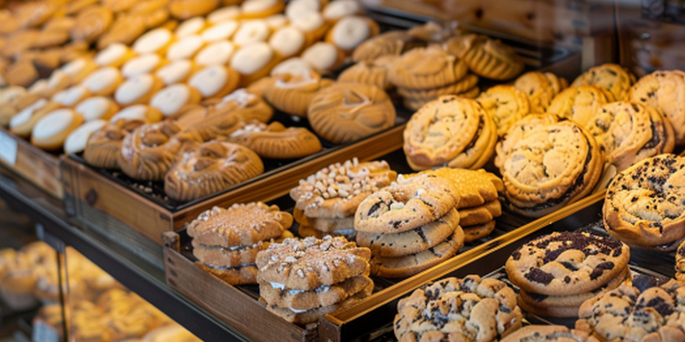

Artisan Bread Selection
We offer a rotating selection of breads including seeded country loaves, floured batards, and round rustic breads. Every loaf is baked fresh each day, so selection varies by the season and what's at its peak.
From the bakery counter
From a crusty loaf at the center of the table to a cookie just for you, here is a look at some of our favorites.
Plan your next visit
Save the bakes you want to ask about. Your favorites and filter stay in this browser for your next visit, and your list appears on the contact page.
No favorites yet. Use “Save to favorites” beside a product to start your list.
This is a wishlist, not a shopping cart. Saving a product does not reserve it or place an order.
No products match this view. Choose “All products” to browse, then save a favorite.

The signature bake
Our most popular bread. This sourdough features a deeply caramelized crust with an open, chewy crumb. Each loaf is shaped by hand and baked in a stone hearth oven for the perfect rise and flavor. Available daily while supplies last.
Ask about a custom order
We offer a rotating selection of breads including seeded country loaves, floured batards, and round rustic breads. Every loaf is baked fresh each day, so selection varies by the season and what's at its peak.

Our pastry counter is always stocked with something sweet. From thick, chewy chocolate chip cookies to delicate sandwich cookies and powdered sugar treats, there's something for every craving.

Throughout the year, we feature seasonal pastries and limited-edition breads. Ask about the current selection when planning your next gathering.
Planning a special event? We offer custom bread and pastry orders for weddings, corporate events, and family gatherings. Visit our contact page to submit a custom order request.